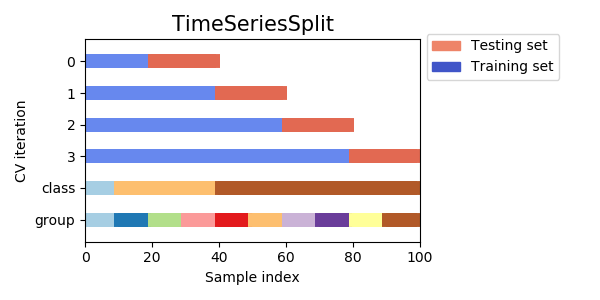

Train-, Dev-, Test-set split for time series data
2019-07-09 • 1 min read
Problem statement
- approach: go towards desired split in small steps. Start with CV for time series data.
CV for time series data
superset approach (sklearn)

 - see: # https://scikit-learn.org/stable/modules/generated/sklearn.model_selection.StratifiedKFold.html -
- see: # https://scikit-learn.org/stable/modules/generated/sklearn.model_selection.StratifiedKFold.html -
moving window - period fold
[TODO generate analogue plot, create notebook for that purpose]
Decisions for dev set:
- get samples from train set
- get samples from test set
- set ratio between train, de, and test samples
Discussion of the options:
Plan for today: - introduce multiplier - introduce model optimization